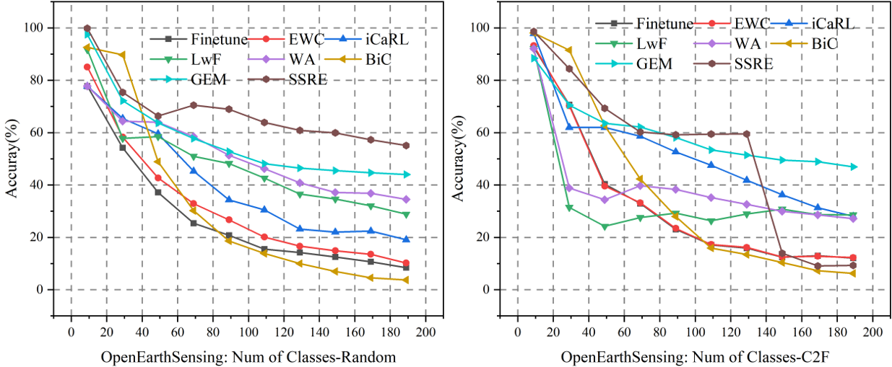

üìä Results
üåç Open World Learning
Table 1. The experiments of OWL on OpenEarthSensing dataset. ID Acc and ODD Acc are the in-distribution and out-of-distribution performance, respectively, and Avg denotes the average performance of each session.
| OOD Method | CIL Method | ID Acc | OOD Acc | Session 1 | Session 2 | Avg |
|---|---|---|---|---|---|---|
| MSP | LwF | 91.17 | 55.01 | 91.27 | 42.11 | 66.69 |
| EWC | 91.17 | 55.01 | 91.27 | 28.89 | 60.08 | |
| iCaRL | 91.17 | 55.01 | 91.27 | 50.29 | 70.78 | |
| MLS | LwF | 90.6 | 63.85 | 91.27 | 44.09 | 67.68 |
| EWC | 90.6 | 63.85 | 91.27 | 29.83 | 60.55 | |
| iCaRL | 90.6 | 63.85 | 91.27 | 51.33 | 71.30 | |
| VIM | LwF | 93.5 | 59.99 | 91.27 | 43.49 | 67.38 |
| EWC | 93.5 | 59.99 | 91.27 | 31.33 | 61.30 | |
| iCaRL | 93.5 | 59.99 | 91.27 | 33.78 | 62.52 |
üå± Incremental Learning
Fig 1. Experimental results of CIL. The left figure presents results in randomized order, while the right figure displays systematically organized results arranged from coarse to fine granularity.

üß© Few-Shot Class-Incremental Learning
Table 2. The experimental results of few-shot class-incremental learning on the OpenEarthSensing dataset. Shots denote the training samples for each category.
| 50-shot | 10-shot | 5-shot | 1-shot | |||||
|---|---|---|---|---|---|---|---|---|
| Last | Avg | Last | Avg | Last | Avg | Last | Avg | |
| Alice | 59.54 | 64.66 | 59.17 | 68.64 | 58.82 | 68.35 | 58.94 | 68.4 |
| FACT | 46.42 | 49.21 | 46.38 | 49.15 | 46.36 | 49.15 | 46.37 | 49.15 |
| SAVC | 71.71 | 79.55 | 72.23 | 80.07 | 66.61 | 75.17 | 59.63 | 76.77 |
üö® Out-of-Distribution Detection
CNN-based Methods
Table 3. OOD detection performance on OES benchmark. 'Near' represents the average AUROC for Near-OOD datasets, 'Far' indicates the average AUROC for Far-OOD datasets.
| Method | Standard | Res Bias | Aerial | MSRGB | IR | |||||
|---|---|---|---|---|---|---|---|---|---|---|
| Near | Far | Near | Far | Near | Far | Near | Far | Near | Far | |
| MSP | 88.42 | 93.91 | 66.51 | 78.4 | 54.38 | 56.85 | 65.50 | 66.92 | 61.47 | 65.35 |
| ODIN | 87.14 | 95.79 | 67.09 | 75.2 | 52.85 | 57.04 | 66.55 | 61.55 | 62.11 | 73.28 |
| MDS | 83.15 | 96.54 | 53.86 | 84.71 | 48.79 | 54.76 | 66.31 | 81.78 | 83.64 | 57.74 |
| MLS | 88.59 | 96.12 | 66.44 | 83.17 | 53.93 | 59.78 | 64.46 | 63.37 | 62.49 | 67.06 |
| VIM | 90.35 | 98.75 | 60.33 | 83.93 | 50.69 | 59.72 | 64.90 | 81.75 | 57.65 | 51.08 |
| FBDB | 90.24 | 98.17 | 66.64 | 87.87 | 54.49 | 60.41 | 59.45 | 74.49 | 61.40 | 68.62 |
| VOS | 86.19 | 95.68 | 63.37 | 81.32 | 51.10 | 60.01 | 59.77 | 58.72 | 59.47 | 60.26 |
| LogiNorm | 89.00 | 95.15 | 68.80 | 80.29 | 53.25 | 56.72 | 77.69 | 55.43 | 64.12 | 63.97 |
| DML | 84.38 | 90.36 | 65.78 | 76.16 | 52.89 | 58.60 | 62.56 | 50.68 | 60.39 | 50.56 |
CLIP-based Methods
Table 4. CLIP based methods' performance on OES benchmark. 'Near' represents the average AUROC for Near-OOD datasets, 'Far' indicates the average AUROC for Far-OOD datasets.
| Method | Standard | Res Bias | Aerial | MSRGB | IR | |||||
|---|---|---|---|---|---|---|---|---|---|---|
| Near | Far | Near | Far | Near | Far | Near | Far | Near | Far | |
| MaxLogits | 53.31 | 43.95 | 68.99 | 63.32 | 64.73 | 40.46 | 68.22 | 9.34 | 62.73 | 37.00 |
| MCM | 61.79 | 52.60 | 59.97 | 51.94 | 66.07 | 67.85 | 58.90 | 55.89 | 54.41 | 40.43 |
| GLMCM | 62.07 | 52.33 | 59.20 | 51.57 | 65.20 | 67.42 | 57.32 | 56.89 | 51.75 | 42.30 |
| CoOp | 86.04 | 94.21 | 64.09 | 73.36 | 61.22 | 76.40 | 66.73 | 90.22 | 61.30 | 45.16 |
| LoCoOp | 85.71 | 90.94 | 66.20 | 71.67 | 64.18 | 76.52 | 69.64 | 86.28 | 61.41 | 43.33 |
| SCT | 85.56 | 90.78 | 65.37 | 70.30 | 64.14 | 77.67 | 68.58 | 86.41 | 60.81 | 42.48 |
| DPM | 91.19 | 99.24 | 68.60 | 92.61 | 60.50 | 71.26 | 74.66 | 93.56 | 65.11 | 75.10 |